무선설비기사 (2001-09-23 기출문제)
1과목: 디지털 전자회로
1. 그림과 같은 발진회로의 출력파형은?
- 톱니파
- 정현파
- 구형파
- 펄스파
(정답률: 알수없음)

2. 그림과 같은 브리지형 정류회로에서 직류 출력전압이 10[V], 부하가 5[Ω]이라고 하면 각 정류소자에 흐르는 첨두전류 값은 얼마인가?
- 6.28[A]
- 3.14[A]
- 1/3.14[A]
- 3.14/2[A]
(정답률: 알수없음)
3. 연산 증폭기(Op-Amp)의 응용회로가 아닌 것은?
- 적분기
- 디지털 반가산 증폭기
- 미분기
- 아날로그 가산 증폭기
(정답률: 알수없음)
4. 그림과 같이 결선된 논리회로의 논리식은?
- Z=(A+B)AㆍB
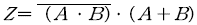
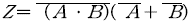
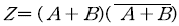
(정답률: 알수없음)
5. 부울 방정식
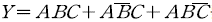
를 간단하게 하면?- AB
- AC
- ABC
- A(B+C)
(정답률: 알수없음)
6. 다음 회로가 나타내는 전달특성은? (단, D는 이상적인 다이오드이다.) (정확한 보기 내용을 아시는분께서는 오류 신고를 통하여 내용 작성부탁 드립니다. 정답은 1번입니다.)
- 복원중 (정확한 보기 내용을 아시는분께서는 오류 신고를 통하여 내용 작성부탁 드립니다. 정답은 1번입니다.)
- 복원중 (정확한 보기 내용을 아시는분께서는 오류 신고를 통하여 내용 작성부탁 드립니다. 정답은 1번입니다.)
- 복원중 (정확한 보기 내용을 아시는분께서는 오류 신고를 통하여 내용 작성부탁 드립니다. 정답은 1번입니다.)
- 복원중 (정확한 보기 내용을 아시는분께서는 오류 신고를 통하여 내용 작성부탁 드립니다. 정답은 1번입니다.)
(정답률: 알수없음)
7. 출력주파수가 200[㎒]인 FM 송신기의 5[㎒] 발진기에서 2000[㎐]의 변조신호로 200[㎐]의 주파수편이를 얻을 때 이 송신기의 주파수 변조지수는?
- 0.1
- 4
- 10
- 40
(정답률: 알수없음)
8. 그림은 무슨 Flip-Flop 회로인가?(문제 복원 오류로 그림파일이 없습니다. 정답은 4번입니다. 추후 복원하여 두겠습니다.)
- M-S FF
- S-C FF
- Clocked FF
- D FF
(정답률: 알수없음)
9. 전류이득은 약 1이고, 전압이득은 대단히 높으며, 출력 임피던스가 대단히 높은 증폭기는?
- 에미터 접지 증폭기
- 콜렉터 접지 증폭기
- 베이스 접지 증폭기
- 모든 트랜지스터 증폭기
(정답률: 알수없음)
10. 두 입력이 같을 때에만 1을 출력하는 게이트는?
- AND 게이트
- OR 게이트
- Exclusive OR 게이트
- Exclusive NOR 게이트
(정답률: 알수없음)
11. 동작영역(dynamic range)이 제일 큰 증폭회로는? 복원중 (정확한 보기 내용을 아시는분께서는 오류 신고를 통하여 내용 작성부탁 드립니다. 정답은 4번입니다.)
- 복원중 (정확한 보기 내용을 아시는분께서는 오류 신고를 통하여 내용 작성부탁 드립니다. 정답은 4번입니다.)
- 복원중 (정확한 보기 내용을 아시는분께서는 오류 신고를 통하여 내용 작성부탁 드립니다. 정답은 4번입니다.)
- 복원중 (정확한 보기 내용을 아시는분께서는 오류 신고를 통하여 내용 작성부탁 드립니다. 정답은 4번입니다.)
- 복원중 (정확한 보기 내용을 아시는분께서는 오류 신고를 통하여 내용 작성부탁 드립니다. 정답은 4번입니다.)
(정답률: 알수없음)
12. 다음 MOS 회로를 나타내는 논리식은?
- Y=A+B
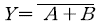
- Y=AㆍB
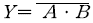
(정답률: 알수없음)
13. 순서논리회로의 구성에 관한 설명으로 틀리는 것은?
- 조합논리회로를 포함한다.
- 입력신호와 레지스터의 상태에 따라 출력이 결정된다.
- 이 회로의 한 예로 카운터를 들 수 있다.
- 기억소자가 필요 없다.
(정답률: 알수없음)
14. 그림의 발진회로에서 발진이 시작될 때 회로에서 필요한 전압이득 Av는 얼마인가?
- Av ＞ 10
- Av ＞ 29
- Av ＞ 30
- Av ＞ 100
(정답률: 알수없음)
15. 다음 FET에 대한 설명중 틀리는 것은?
- 트랜지스터보다 속도가 느리며 이득, 대역폭(GB)적이 적다.
- FET 자체가 저항 작용을 하므로 MOS 소자만으로 디지털 시스템 구성이 가능하다.
- P채널소자의 ON 저항이 n채널소자 보다 적다.
- n채널 MOS소자의 스위칭 시간이 P채널보다 작다.
(정답률: 알수없음)
16. 그림과 같이 해독기에 BCD입력이 가해지고 있다. 해독기는 BCD입력이 1001인 때만 출력이 1을 나타낸다고 할 경우 출력 Y를 부울대수식으로 표현하면?
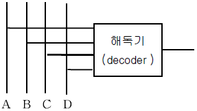
- AD
- AB
- AC
- BCD
(정답률: 알수없음)
17. 그림과 같은 Darlington 접속 회로에서 전류이득 Io/Ib는 얼마인가?(단, Q1과 Q2의 hfe는 50이다.)
- 2301
- 2401
- 2501
- 2601
(정답률: 알수없음)
18. 진폭변조에서 신호전압을 es=Essinωst, 반송파 전압을 ec=Ecsinωct라 할 때 피변조 반송파 전압 e(t)를 표시하는 식은?
- e(t)=(Ec+Es) sin ωst
- e(t)=(Ec+Es) sin ωct
- e(t)=(Ec+Essinωst) sinωct
- e(t)=(Es+Ecsinωct) sin ωst
(정답률: 알수없음)
19. C급 증폭기의 효율에 관한 설명 중 옳지 못한 설명은?
- 유통각을 적게하면 효율이 높아진다.
- 유통각과 효율과는 관계가 없다.
- 유통각이 θ= π인 경우 B급 동작에 해당한다.
- θ=0일 때 효율은 100[%] 이다.
(정답률: 알수없음)
20. 그림과 같은 동조 증폭기에서 중화가 이루어지기 위한 조건은? (단, Cb'c는 베이스-콜렉터간의 정전용량이며, CN은 중화용 정전용량이다.)
- CN=L1L2Cb'c
- CN=L1L2/Cb'c
- CN=(L1/L2)Cb'c
- CN=(L2/L1)Cb'c
(정답률: 알수없음)
2과목: 무선통신 기기
21. 무선통신에 사용되는 스펙트럼 확산통신방식의 특징을 나타내는 것은?
- 도청으로부터 메시지 보호가 유리하다.
- 고전력 스펙트럼이 필요하다.
- 대용량 M/W 시스템에 적용이 용이하다.
- 주파수 대역폭이 극히 좁다.
(정답률: 알수없음)
22. 공중선의 실효 인덕턴스를 측정하기 위하여 그림과 같은 회로를 구성하고 스위치 S를 Ls1으로 놓고 공진시켰을 때 주파수를 f1이라 하고 Ls2로 놓고 공진시켰을 때 주파수를 f2라 한다. f1=2f2라 하면, 실효인덕턴스 Le는?
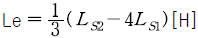
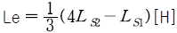
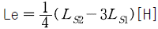
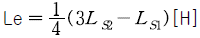
(정답률: 알수없음)
23. 오실로스코프로 구할 수 없는 것은?
- 변조도
- 주파수
- 전압
- 코일의 Q
(정답률: 알수없음)
24. PLL(phase locked loop)의 용도로 가장 적당한 것은?
- FM 신호의 복조
- SSB 신호의 복조
- PCM 신호의 복조
- DM 신호의 복조
(정답률: 알수없음)
25. 무선 송신기에서 발생하는 스퓨리어스 복사(Spurious emission)의 방지 방법이 아닌 것은?
- 전력 증폭단을 push-pull로 접속한다.
- 증폭단과 공중선 결합 회로에 π형 회로를 사용한다.
- 급전선에 트랩(trap)을 설치한다.
- 전력 증폭단의 바이어스를 깊게 취한다.
(정답률: 알수없음)
26. AFC에 대한 설명으로 잘못된 것은?
- 발진기의 발진 주파수를 자동적으로 조정하여 항상 일정 주파수로 유지시킨다.
- 송신기, 수신기 어느 장치에도 사용된다.
- 기준 주파수와 비교하는 발진기는 반드시 항온조에 수용된 수정 발진기를 사용한다.
- AFC 장치는 간접 FM 송신기에 많이 사용된다.
(정답률: 알수없음)
27. 다음과 같은 FM 수신기에서 1단 증폭기의 이득이 10[㏈], 잡음지수가 1.3[㏈]이고 2단 증폭기의 이득이 10[㏈], 잡음지수가 1.5[㏈] 그리고 3단 증폭기의 이득이 5[㏈], 잡음지수가 2[㏈]인 증폭기가 있다. 이 수신기의 종합 잡음지수는?
- 14.44[㏈]
- 4.13[㏈]
- 2.28[㏈]
- 1.35[㏈]
(정답률: 알수없음)
28. DSB(Direct Broadcasting Satellite) 설명중 틀리는 것은?
- 방송 위성은 정지궤도 위성을 이용한다.
- 한 개의 위성으로 한반도 전체에 서비스 할 수 있다.
- 사용 주파수 대역은 V/UHF 대역을 사용한다.
- 가정에서는 소형 파라보라 안테나를 사용한다.
(정답률: 알수없음)
29. 축전지에서 AH(암페어시)가 나타내는 것은?
- 축전지의 사용가능시간
- 축전지의 용량
- 축전지의 충전전류
- 축전지의 방전전류
(정답률: 알수없음)
30. GMDSS 설비 중 DSC에 사용되는 전파의 형식은?
- F1B
- A1A
- J3E
- H3E
(정답률: 알수없음)
31. 다음은 Ring 변조기의 동작원리를 설명한 것이다. 잘못 표현된 것은?
- 변조기 출력에는 반송파가 제거되고 상, 하측대파만 나온다.
- 반송파가 인가되지 않으면 변조 신호만 나타난다.
- Ring 변조기를 복조기로도 사용할 수 있다.
- 반송파만 인가되면 출력에는 아무것도 나타나지 않는다.
(정답률: 알수없음)
32. 전계강도 측정시 0[㏈]는 얼마를 기준으로 하는가?
- 1[㎶/m]
- 1[㎷/m]
- 1[V/m]
- 10[V/m]
(정답률: 알수없음)
33. 무선 송신기가 20[㎒]의 크리스털 발진기와 주파수 체배 계수가 2, 3, 3인 주파수 체배기를 사용한다. 송신기의 출력 주파수 범위를 계산하면 다음 중 어느 것인가? (단, 크리스털의 안정도는 200ppm 이다.)
- 120[㎒] ±1.296[㎒]
- 120[㎒] ±0.024[㎒]
- 360[㎒] ±8.642[㎒]
- 360[㎒] ±1.296[㎒]
(정답률: 알수없음)
34. 수신 주파수와 국부발진 주파수를 동시에 변동시켜 일정한 중간 주파수를 얻도록 조정하는 방식이 Tracking인데, 만일 Tracking이 정확하지 않으면 어떤 현상이 초래되는가?
- 이득 증가
- 충실도 저하
- 신호대 잡음비 개선
- 간섭과 방해 신호의 감소
(정답률: 알수없음)
35. 어떤 코일에 일정한 전자에너지를 축적시키고자 한다. 이 때 인덕턴스를 4배로 늘리면 전류 I는 몇 배나 감소하는가?
- 0.24×42
- 0.24×2
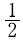
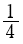
(정답률: 알수없음)
36. 점유 주파수 대역폭을 바르게 설명한 것은?
- 송신기에서 방출되는 전체 에너지의 99[%]를 차지하는 대역폭
- 송신기에서 방출되는 전체 에너지의 100[%]를 차지하는 대역폭
- 송신기에서 방출되는 전체 에너지의 0.5[%]를 차지하는 대역폭
- 송신기에서 방출되는 전체 에너지의 50[%]를 차지하는 대역폭
(정답률: 알수없음)
37. 고주파 증폭기용으로 사용하는 능동 소자의 특성이 아닌 것은?
- 입출력 전달 특성이 직선형일 것
- 이득이 클 것
- 입출력 캐패시턴스가 클 것
- 저 잡음 지수를 가질 것
(정답률: 알수없음)
38. Over Tone 발진회로에 대한 설명 중 틀린 것은?
- 배조파 수정 진동자를 사용한다.
- LC 발진회로의 주파수 제어 방식을 이용한다.
- 피어스 GK 회로와 등가이다.
- CR 발진 회로의 주파수 제어 방식을 이용한다.
(정답률: 알수없음)
39. 어떤 무선국의 무선설비에서 발사되는 전파가 다른 통신계에 방해를 주는 경우 중 틀린 것은?
- 키이클릭이 없을 경우
- 과변조일 경우
- 주파수 편차가 클 경우
- 기생진동이 생길 경우
(정답률: 알수없음)
40. 무선 통신용 송신기에서 입력신호를 변조(Modulation)하는 가장 타당한 이유는?
- 전송매개체와 신호를 정합(Matching) 시키기 위해
- 주파수를 높이기 위해
- 수신기에서 받는 신호를 변환할 필요가 없기 때문에
- 실제 구현시 회로가 간단하기 때문에
(정답률: 알수없음)
3과목: 안테나 공학
41. 대수주기 안테나의 가장 큰 특징은?
- 구조가 간단하다.
- 적은 소자로 큰 이득을 얻을 수 있다.
- 주파수 대역이 아주 넓다.
- 지향성을 전자적으로 가변할 수 있다.
(정답률: 알수없음)
42. End fire helical antenna의 특징으로 맞는 것은?
- 이득이 낮다.
- 반사파가 존재한다.
- 지향성을 갖는다.
- HF대에 이용된다.
(정답률: 알수없음)
43. 그림과 같은 구형도파관에 TE10파가 진행하기 위해 도파관의 긴변의 길이는 얼마이어야 하는가? (단, 차단 주파수 fc=6.000[㎒]이다.)
- 1.25[㎝]
- 1.5[㎝]
- 2[㎝]
- 2.5[㎝]
(정답률: 알수없음)
44. 초단파가 가시거리를 넘어서 이례적으로 멀리 전파하는 일이 있는데 그 원인이 아닌 것은?
- 초굴절 또는 라디오 닥트에 의한 전파
- 대류권 산란에 의한 전파
- 산악회절파에 의한 전파
- F층의 반사에 의한 전파
(정답률: 알수없음)
45. Beam antenna는 수개의 반파장 안테나를 동일평면내에 규칙적으로 배치하는데 일반적인 배열 간격은?
- λ
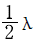
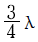
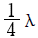
(정답률: 알수없음)
46. 텔레비젼 방송의 송신용으로 적당하지 않는 안테나는?
- 슈퍼 게인 안테나
- 슈퍼 탄스타일 안테나
- 쌍루우프 안테나
- 인 라인 안테나
(정답률: 알수없음)
47. MUF(Maximum Usable Frquency)와 관계 적은 것은?
- 송신전력
- 임계 주파수
- 송, 수신점간의 거리
- 전리층의 높이
(정답률: 알수없음)
48. 루프 안테나(Loop Antenna)의 특성에 속하지 않는 것은?
- 급전선과의 정합이 어렵다.
- 수평면내 지향성 특성이 8자형이다.
- 소형으로 이동이 용이하다.
- 주간오차가 크다.
(정답률: 알수없음)
49. 도선의 고주파에 대한 표피작용의 깊이(Skin depth)는 주파수 f와 어떤 관계가 있는가?
- f에 비례
- f의
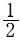
승에 비례 - f에 반비례
- f의
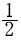
승에 반비례
(정답률: 알수없음)
50. 3[㎓]~30[㎓]범위내에 해당하는 주파수대는?
- HF
- VHF
- MF
- SHF
(정답률: 알수없음)
51. 다음 중 진행파와 반사파가 있는 급전선은?
- 무한장 급전선
- SWR=1인 급전선
- 정규화 부하 임피던스가 1인 급전선
- 반사계수가 1인 급전선
(정답률: 알수없음)
52. 박쥐날개형 안테나를 직각으로 교차시켜 구성한 것으로 여러단 겹쳐서 사용하며, 단위 안테나의 표면적이 넓게 되므로 실효적으로 안테나의 Q가 저하하여 광대역 특성을 갖게 되는 안테나는?
- 헤리컬 안테나
- 턴스타일 안테나
- 슈퍼 턴스타일 안테나
- 슈퍼 게인 안테나
(정답률: 알수없음)
53. 건조지, 바위산, 건물의 옥상등에 사용되는 접지 방식은?
- 심굴식접지
- 방사상접지
- 다중접지
- 카운터포이즈
(정답률: 알수없음)
54. 송신기의 동조를 완전히 취했을 때 안테나의 실효급전 전류값이 10[A]였다. 이 상태의 송신 안테나에서 복사전력이 100[W], 실효저항이 4[Ω] 이었다면 복사효율은 얼마인가?
- 5[%]
- 15[%]
- 25[%]
- 35[%]
(정답률: 알수없음)
55. 임의의 시각에 F1층의 임계주파수가 4.5[㎒] 이라고 하면 송수신간 거리 400[㎞]일 때 F1층의 반사를 이용하여 전파되는 최고 사용주파수는 약 몇[㎒]인가? (단, F1층의 겉보기 높이는 역 200[㎞]이다.)
- 4.4[㎒]
- 5.0[㎒]
- 5.8[㎒]
- 6.4[㎒]
(정답률: 알수없음)
56. 개구면 안테나에 해당되지 않는 것은?
- 렌즈 안테나
- 곡면 반사경 안테나
- 슬롯(slot) 안테나
- 유전체봉 안테나
(정답률: 알수없음)
57. 단파대 통신에서 주간보다 야간에 낮은 주퍄수를 사용하는 이유는 무엇인가?
- 전리층에서의 전파 흡수가 작으므로
- 주간보다 야간의 전자밀도가 낮으므로
- 주간보다 야간의 전자밀도가 커지므로
- 낮은 주파수가 전파의 회절이 강하므로
(정답률: 알수없음)
58. 초단파용 안테나로 정합장치가 불필요하며 실효길이가 반파다이폴 안테나의 약 2배가 되는 것은?
- Loop Antenna
- Rhombic Antenna
- Folded Antenna
- Turnstyle Antenna
(정답률: 알수없음)
59. 미소다이폴(Infinitesimal dipole) 안테나의 복사저항은?
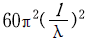
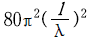
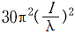
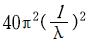
(정답률: 알수없음)
60. 미소 다이폴로부터 복사되는 전계의 세기는?
- 파장에 반비례하고 거리에 비례하는 크기를 갖는다.
- 파장에 비례하고 거리에 반비례하는 크기를 갖는다.
- 파장과 거리에 비례하는 크기를 갖는다.
- 파장과 거리에 반비례하는 크기를 갖는다.
(정답률: 알수없음)
4과목: 무선통신 시스템
61. 이동통신에서 Mobile unit에 전달되는 전력은 송ㆍ수신 기간의 거리 R에 어떻게 비례하는가?
- R2
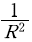
- R4
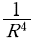
(정답률: 알수없음)
62. 인공위성의 궤도에서 μ를 Keppler 정수, D를 지구반경(R)과 위성고도(h)의 합이라고 할 때 위성 주기 T는?
- T=μ/4π2×D3
- T=4π2/D3×μ
- T=4μ/π2×D3
- T=4π2/μ×D3
(정답률: 알수없음)
63. 이동통신에서 이동체의 움직임에 따라 수신 신호 주파수가 변하는 현상은?
- 지역확산현상
- 음영현상
- 채널간섭현상
- 도플러현상
(정답률: 알수없음)
64. 무선통신방식 중 전파의 주파수를 마아크(mark), 스페이스(space)에 대응시켜 주파수가 다른 2개의 전파를 교대로 송신해서 통신하는 방식은?
- 진폭변조방식
- 위상변조방식
- 주파수편이방식
- 주파수변조방식
(정답률: 알수없음)
65. 레이더에서 발사된 펄스파가 50[㎲]후에 목표물에 반사되어 돌아왔다. 목표물까지의 거리는 어느 값에 가까운가?
- 3.5[㎞]
- 6.0[㎞]
- 7.5[㎞]
- 9.0
(정답률: 알수없음)
66. 이득이 각각 G1, G2, G3이고 잡음지수가 각각 F1, F2, F3인 3개의 증폭기를 종속접속 하였을 때 종합잡음 지수(F)는 얼마인가?
- F=F1+F2+F3
- F=G1G2G3(F1+F2+F3)
- F=F1+G1F2+G2F3
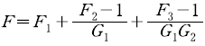
(정답률: 알수없음)
67. 이동통신 기지국의 서비스 범위 확대 방법과 거리가 먼 것은?
- 송신출력을 높인다.
- 안테나의 높이를 높인다.
- 다이버시티 수신기를 사용한다.
- 고이득 무지향성 안테나를 이용한다.
(정답률: 알수없음)
68. 전파의 회절현상에 대한 설명 중 틀린 것은?
- 장파대에서 많이 발생한다
- 파장이 길수록 심하다.
- 주파수가 높을수록 심하다.
- 중파대에서 많이 발생한다.
(정답률: 알수없음)
69. INMARSAT 통신망의 구성요소가 아닌 것은?
- 해안지구국
- 선박지구국
- 운용관리센타
- 육상지구국
(정답률: 알수없음)
70. 정지위성통신 시스템의 특징이 아닌 것은?
- 다원접속을 이용한다.
- 광역통신에 적합하다.
- 고품질, 광대역통신에 적합하다.
- 전파손실이 가장 적다.
(정답률: 알수없음)
71. 주파수 변조(FM)파와 위상변조(PM)파와의 설명 중 옳은 것은?
- FM파는 변조신호에 따라 주파수가 일정하나 PM파는 변화한다.
- FM파는 변조신호의 주파수에 반비례하나 PM파는 일정하다.
- FM파는 측파대가 무한히 발생하나 PM파는 한정되어 있다.
- FM파는 반송파의 크기가 변화하나 PM파는 언제나 일정하다.
(정답률: 알수없음)
72. 표본화 정리에서 표본화 주파수 fs와 신호에 포함되어 있는 최고 주파수 fm사이의 관계는?
- fs ≤2 fm
- fs ≥2 fm
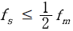
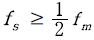
(정답률: 알수없음)
73. 마이크로파 전송시스템에서 신호에 추가되는 잡음을 두가지로 대별하면?
- 우주잡음과 패스잡음
- 급전잡음과 재생잡음
- 열잡음과 인공잡음
- 열잡음과 혼변조 잡음
(정답률: 알수없음)
74. 적도상에 고도 35.860[㎞]로 띄워진 위성 3개를 등간격으로 배치하여 전 세계를 커버할 수 있는 경제적인 위성통신 방식은?
- 랜덤 위성 방식
- 위상 위성 방식
- 다중 위성 방식
- 정지 위성 방식
(정답률: 알수없음)
75. 우리나라 지상파 TV의 표준방식(NTSC)에 대한 설명 중 틀린 것은?
- 주사선수는 525개이며 비월주사방식이다.
- 음성을 포함한 주파수 대역은 6[㎒]이다.
- 화면의 종횡비는 4:5 이다.
- 영상신호의 측파대 특성은 VSB 이다.
(정답률: 알수없음)
76. 다음 중 HDTV에 관한 설명으로 틀리는 것은?
- 기존의 TV 방식보다 훨씬 섬세하고 치밀하며, 선명한 화상과 양질의 음성을 제공하는 TV전송 방식이다.
- 음성신호변조는 아날로그형태이다.
- 주사선수는 현행방식인 525개의 약 2배인 1.125개 이상이다.
- 고품질 영상과 음성을 전송하며, 광대역(27[㎒])의 전송도와 압축기들을 적용한다.
(정답률: 알수없음)
77. 방송국의 공중선 전력이 10[㎾]에서 90[㎾]로 증가되면 전계 강도는 몇 배로 되는가? (단, 거리는 일정함)
- 3배
- 1/3배
- 9배
- 1/9배
(정답률: 알수없음)
78. Micro 파대의 송신장치에서 주파수 체배에 주로 많이 사용되는 것은?
- Diode Thyristor
- TR Convertor
- Tube Convertor
- Varactor diode
(정답률: 알수없음)
79. 현재 국내에서 상용화되어 사용되고 있는 디지털 이동통신 시스템에서는 CDMA 방식을 사용하고 있다. 여기에는 PN 코드를 사용하고 있는데 다음 설명 중 옳은 것은?
- N을 쉬프트레지스터의 단수라할 때 주기는 2**N 이다.
- PN 코드는 상호상관특성이 우수하여 동기목적으로 사용하기에 적합하다.
- PN 코드는 자기상관특상이 우수하여 동기목적으로 사용하기에 적합하다.
- maximum length sequence는 PN 코드가 아니다.
(정답률: 알수없음)
80. 스켓터 통신방식에 대한 설명 중 틀리는 것은?
- 설비가 대형이고 고성능이어야 한다.
- 가시거리 통신방식이다.
- 무중계방식이다.
- 전파의 전파손실이 크고 훼이딩이 발생하므로 다이버시티방식을 채택한다.
(정답률: 알수없음)
5과목: 전자계산기 일반 및 무선설비기준
81. 전파연구소장은 특별한 사유가 없는 한 전자파 적합등록 신청서를 받은 날부터 며칠 이내에 처리하여야 하는가?
- 3일
- 5일
- 10일
- 25일
(정답률: 알수없음)
82. 링크드 리스트(Linked list)의 특징을 아닌것은?
- 자료들을 연속된 공간에 저장할 필요가 없다.
- 기억장치내의 다른자료들을 움직일 필요가 없다.
- 포인터를 위한 기억장소가 필요하다.
- 임의의 자료를 읽는데 걸리는 시간이 선형 리스트보다 짧다.
(정답률: 알수없음)
83. 주기억 소자가 아닌 것은?
- 자기코어
- 자기 테이프
- RAM
- ROM
(정답률: 알수없음)
84. 다음 중 광학적 입력장치가 아닌 것은?
- 카드 리더
- 바 코드 리더
- 광학적 마크 리더
- 영상 이미지 리더
(정답률: 알수없음)
85. 기준 주파수란 무엇인가?
- 지정 주파수에 대하여 특정한 위치에 고정되어 있는 주파수를 말한다.
- 공간에 발사되어 용이하게 식별되고 측정할 수 있는 주파수를 말한다.
- 무선국에서 운용되는 중심주파수를 말한다.
- 무선국에서 사용하는 주파수 마다의 중심 주파수를 말한다.
(정답률: 알수없음)
86. 주소 지정방식 중 기억장치에 최소 두 번 접근해야 오퍼랜드를 얻을 수 있는 것은?
- 직접주소지정방식
- 간접주소지정방식
- 상대주소지정방식
- 실제값주소지정방식
(정답률: 알수없음)
87. OMR 카드리더기에서 답안지 적재함을 무엇이라고 하는가?
- 호퍼
- 스택
- 드럼
- 버퍼
(정답률: 알수없음)
88. 주주기 메모리 용량보다 큰 프로그램을 사용할 수 있는 메모리 이용 기법은?
- 직접 메모리 억세스
- 가상 기억 장치
- 캐시 기억 장치
- 연관 기억 장치
(정답률: 알수없음)
89. 전파관계법의 안전시설에 규정된 고압 전기의 정의는?
- 고주파 또는 교류전압 600[V] 이상, 직류전압 750[V] 이상
- 고주파 또는 교류전압 750[V] 이상, 직류전압 600[V] 이상
- 고주파 또는 교류전압 600[V] 이하, 직류전압 750[V] 이하
- 고주파 또는 교류전압 750[V] 이하, 직류전압 600[V] 이하
(정답률: 알수없음)
90. 프로그래밍 언어 중 고급언어에 속하지 않는 것은?
- COBOL
- RPG
- C
- ASSEMBLER
(정답률: 알수없음)
91. 전자파장해기기의 전자파장해 방지기준 및 전자파로부터 영향을 받는 기기의 전자파로부터의 보호기준은?
- 대통령령으로 정한다
- 법령으로 정한다.
- 국무총리령으로 정한다.
- 정보통신부령으로 정한다.
(정답률: 알수없음)
92. 허가유효기간이 1년인 무선국의 재허가 신청은 허가유효기간 만료 얼마전에 해야 하는가?
- 1월
- 2월
- 3월
- 4월
(정답률: 알수없음)
93. 10.5[㎓]~40[㎓]사이의 주파수대를 사용하는 고정국의 주파수 허용편차[백만분율]는 얼마인가?
- 50
- 100
- 300
- 500
(정답률: 알수없음)
94. 다음 중 데이터를 연산할 때 스택(stack)만 사용하는 인스트럭션은?
- 0 주소 인스트럭션
- 1 주소 인스트럭션
- 2 주소 인스트럭션
- 3 주소 인스트럭션
(정답률: 알수없음)
95. 다음 중 형식검정대상에 포함되지 않는 기기는?
- 네비텍스수신기
- 이동가입무선전화장치
- 디지털선택호출전용수신기
- 협대역직접인쇄전신장치의 기기
(정답률: 알수없음)
96. 다음 중 전파형식별 공중선전력의 표시로서 잘못 연결된 것은?
- A1A-PX
- J3E-PX
- R3E-PX
- A3E-PX
(정답률: 알수없음)
97. 다음 중 무선국이 행하는 업무의 설명이 틀린 것은?
- 고정업무 : 일정한 고정지점간의 무선통신 업무를 말한다.
- 무선 방향탐지 업무 : 무선국 또는 물체의 방향을 결정하기 위하여 전파를 수신하여 행하는 업무
- 무선 표지 업무 : 이동국에 대하여 방향 또는 방위를 결정하게 할 수 있도록 하기 위한 무선항행업무
- 무선항행업무 : 육상국이나 이동국 상호간의 무선통신업무
(정답률: 알수없음)
98. 전파형식 중 진폭변조 전화의 단측파대 억압 반송파를 바르게 표시한 것은?
- A3E
- R3E
- J3E
- B3E
(정답률: 알수없음)
99. 2의 보수로 나타낸 수에서 (-17)+(-4)의 계산결과는?
- 10010101
- 11101011
- 11110011
- 10011011
(정답률: 알수없음)
100. 다음 중 2의 보수 표현방식에 의해 n비트의 정수를 표현할 때 허용범위로 옳은 것은?
- -(2n-1) ~ (2n-1)
- -(2n-1) ~ (2n-1 - 1)
- -(2n-1) ~ (2n-1)
- -(2nn-1-1) ~ (2n-1-1)
(정답률: 알수없음)